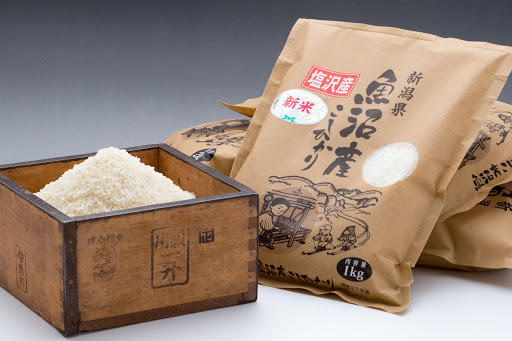
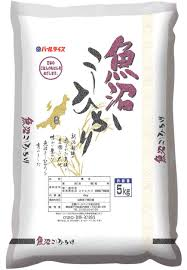
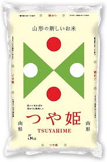

美味しいお米
特A地域の最高級品質のお米

特Aクラスお米とは
お米のご注文
特Aクラスのお米販売中！
購入するお米を選んでください

魚沼産コシヒカリの、つや、食感、甘味を食べ比べてみて下さい！注文後に精米するので、精米したての白米を楽しむことが出来ます。産地直送・農家直送の魚沼産コシヒカリをぜひ味わって下さい！
（お米も他の野菜と同じく、精米後に長く保存しておくと食味が落ちていきます。美味しく味わえる期間は、精米後約1ヶ月です）
（お米も他の野菜と同じく、精米後に長く保存しておくと食味が落ちていきます。美味しく味わえる期間は、精米後約1ヶ月です）

日本一を誇るブナの原生林が育む滋養に満ちた水系、先人の知恵と四季鮮やかな山形の風土が生んだ、日本の美味しいお米のルーツとなる「亀ノ尾」。その名が「つや姫」です。
（お米も他の野菜と同じく、精米後に長く保存しておくと食味が落ちていきます。美味しく味わえる期間は、精米後約1ヶ月です）
（お米も他の野菜と同じく、精米後に長く保存しておくと食味が落ちていきます。美味しく味わえる期間は、精米後約1ヶ月です）
店舗検索
| 住所 | 〒950-●●●● 新潟県新潟市 高級米専門センター (新潟駅より徒歩8分) |
|---|---|
| 電話番号 | 03-●●●●-●●●● |
| 営業時間 | 平 日: 07:00 - 18:00 , 土日祝: 08:00 - 15:00 |
お問い合わせ
お客様情報を入力してください
| お名前 | |
|---|---|
| ふりがな | |
| メールアドレス | |
| 電話番号 | |
| 問合せ要旨 | |
| 内容 |